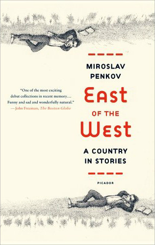
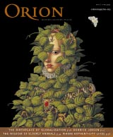
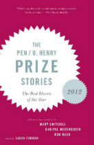
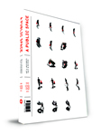
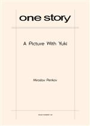

East of the West: Stories (Farrar, Straus and Giroux / Picador)

A grandson tries to buy the corpse of Lenin on eBay for his
Communist grandfather. A failed wunderkind steals a golden cross
from an Orthodox church. A boy meets his cousin (the love of his
life) once every five years in the river that divides their village
into east and west. These are Miroslav Penkov’s strange,
unexpectedly moving visions of his home country, Bulgaria, and they
are the stories that make up his charming, deeply felt debut
collection.
In East of the West, Penkov writes with great empathy of centuries
of tumult; his characters mourn the way things were and long for
things that will never be. But even as they wrestle with the weight
of history, with the debt to family, with the pangs of exile, the
stories in East of the West are always light on their feet, animated
by Penkov’s unmatched eye for the absurd.
Amazon | Barnes & Noble | Powell's | Indie Bound | Books-A-Million
Introduction
^table of contents
When I was a child, I did not much like to read, because I was lazy
and preferred to play soccer outside. I did not like to be read to
either, because repetition bored me and because my parents were
really good story tellers – for years my mother told me about the
adventures of two little hippos (brother and sister) who we’d send
around the world and get into all sorts of trouble, while my father
told me stories about Bulgarian history: khans, tsars, rebels
fighting the Turks.
As a college student in the US, I wrote stories of my own,
pseudo-American stories influenced by my teenage love of Stephen
King, a writer I still admire greatly. It became apparent, very
quickly, that the fake American stories I wrote were unconvincing
garbage. Taking a class in Western History, I was amazed to find out
that the professor was writing his dissertation on janissaries in
the Balkans. He asked me if I could translate a Bulgarian text for
him. I was mesmerized, the way I’d been as a child, by our own
history. How could I have forgotten it? Why was I not writing
stories like these, packed with heroism, betrayal, courage and
cowardice, freedom and death?
And so I began this book. I wanted people to listen and be
moved by our tales, and to show them that Bulgarians are not all car
thieves and prostitutes, though there are plenty of those too. As a
boy I’d listened to my father and felt calm and safe, and twenty
years later I wanted to feel that same way. Writing about Bulgaria
was the only way I knew that would get me back to Bulgaria – not
just my family, whom I miss greatly, but also our muddy village
roads, black fields, blue mountains...
read the rest
here.
Buying Lenin
^table of contents
 When
Grandpa learned I was leaving for America to study, he wrote me
a good-bye note. “You rotten capitalist pig,” the note read, “have a
safe flight. Love, Grandpa.” It was written on a creased red ballot
from the 1991 elections, which was a cornerstone in Grandpa’s
communist ballot collection, and it bore the signatures of everybody
in the village of Leningrad. I was touched to receive such an honor,
so I sat down, took out a one dollar bill, and wrote Grandpa the
following reply: “You communist dupe, thanks for the letter. I’m
leaving tomorrow, and when I get there I’ll try to marry an American
woman ASAP. I’ll be sure to have lots of American children. Love,
your grandson.”
When
Grandpa learned I was leaving for America to study, he wrote me
a good-bye note. “You rotten capitalist pig,” the note read, “have a
safe flight. Love, Grandpa.” It was written on a creased red ballot
from the 1991 elections, which was a cornerstone in Grandpa’s
communist ballot collection, and it bore the signatures of everybody
in the village of Leningrad. I was touched to receive such an honor,
so I sat down, took out a one dollar bill, and wrote Grandpa the
following reply: “You communist dupe, thanks for the letter. I’m
leaving tomorrow, and when I get there I’ll try to marry an American
woman ASAP. I’ll be sure to have lots of American children. Love,
your grandson.”
 Buying Lenin was originally published in the Fall 2007 issue
of The Southern Review where it won the 2007 Eudora
Welty Prize in fiction.
The following year Salman Rushdie and Heidi Pitlor chose the story
to appear in the 2008 Best American Short Stories.
Buying Lenin was originally published in the Fall 2007 issue
of The Southern Review where it won the 2007 Eudora
Welty Prize in fiction.
The following year Salman Rushdie and Heidi Pitlor chose the story
to appear in the 2008 Best American Short Stories.
Here is an
essay
on how the story came into existence
along with
a story excerpt. You can hear Salman Rushdie speak briefly of my story on the Leonard Lopate
Show.
East of the West ^table of contents
(excerpt)

I first met Vera in the summer of 1970, when I was six. At that time my folks and I lived on the Bulgarian side of the river, in the village of Bulgarsko Selo, while she and her folks made home on the other bank, in Srbsko. A long time ago these two villages had been one – that of Staro Selo – but after the great wars Bulgaria had lost land and that land had been given to the Serbs. The river, splitting the village in two hamlets, had served as a boundary – what lay east of the river stayed in Bulgaria and what lay west belonged to Serbia.
"East of the West" appeared in the May/June 2011 issue of Orion Magazine. You can hear me talk about the story and the book right here:
The story won the BBC International Short Story Award 2012 and was also chosen for the PEN/O. Henry Prize Stories 2012 and The Best American Nonrequired Reading 2013
Makedonija
^table of contents
(story opening)
I was born just twenty years after we got rid of the
Turks. 1898. So yes, this makes me seventy-one. And yes, I’m grumpy.
I’m mean. I smell like all old men do. I am a walking pain, hips,
shoulders, knees and elbows. I lie awake at night. I call my
daughter by my grandson’s name and I remember the day I met my wife
much better than yesterday, or today. August 2, I think. 1969. Last
night I pissed my bed and who knows what joy tonight will bring? I
am in no way original or new. Although, I might be jealous of a man
who’s sixty years dead.
Read "Makedonija" in its entirety online at
Five Chapters.
The Letter ^table of contents
(story opening)

It’s not like Grandmoms is urging me to steal from the British. But she knows I can’t help it. So when I walk under the trellis she looks up from her newspaper and says, Maria, today Missis was seen at the store with new earrings. Real pearls.She tells me to tie the end of a loose vine string and while I tie it Grandmoms says, I’m not saying, you know. But we could split it down the middle.
I throw her this look. She says, Sixty-forty? and then she’s back to her paper. Turning one page and licking her fingers to turn the next, like the ink on her fingers is honey.
"The Letter" appeared in issue 13 of A Public Space and received special mentions in The Best American Short Stories 2012: Other Distinguished Stories of 2011 and The Pushcart Prize XXXVII: Best of the Small Presses (2013 Edition). Read more here.
A Picture With Yuki ^table of contents
(excerpt)

We’d learned about the in vitro program in Sofia last year, from a friend of my mom’s - a forty-something school teacher, who after many barren years was now, finally, the mother of twins – Lazar and Leopold, or some similar sounding madness.By that time, Yuki and I had been married and had tried to conceive for eighteen months. We consulted a doctor in Chicago, a Bulgarian my friends at O’Hare recommended. It turned out there was something the matter with Yuki’s fallopian tubes. It would be very hard, the doctor said, to get pregnant as nature designed it, though by all means, he said, keep trying. It would be easier to try other means, but these, of course, required hefty sums. I am a luggage loader at O’Hare. Yuki waits tables at a low-level sushi restaurant, imaginatively named Tokyo Sushi, and on the side baby-sits youngster Americans, whose parents have deemed her speaking Japanese to their children somehow beneficial. We cannot produce hefty sums.
"A Picture with Yuki" appeared in issue 148 of One Story and was made into a feature film. A Bulgarian-Japanese co-production, the film was directed by Luchezar Avramov and starred Kiki Sugino, Ruscen Vidinliev, Dimiter Marinov (Green Book), and Bulgarian Olympic boxing legend Serafim Todorov. The film premiered at the Sofia International Film Festival in March 2019 where it received the Audience Award for films from the International and the Balkan competitions.
Cross Thieves ^table of contents
(excerpt)
Drugarki i drugari, dear
comrades, please welcome the Amazing Rado!
This is how my father introduces me to the
crowd. For the past seven years, at least once a week. Nursing
homes, neighborhood retiree clubs – of the retired engineer, retired
welder, crane-operator. There I am, in a room that smells of
lavender spirit, in front of two rows of wheelchairs, trembling
chins, dangling tubes, bags of urine, doing my mnemonic tricks to
weak, Parkinsonian applause. And after that my father begins his
rounds among the rows, an empty 3-liter jar in his hands. The label
on the jar is peeled off almost completely and on the white space
Father has scribbled boldly - Amazing Rado’s Scholarship Fund. But
if you look closely, you’ll see a corner of the original label still
standing and then you’ll know – this jar was once full of pickled
cauliflower.
The Night Horizon ^table of contents
(story opening)
She fit like a stone in her father’s cupped palm when he
first held her. Yellow palm, stained from stringing leaves of
tobacco, and she bloody, blind, and quiet. She did not scream when
her father took her. She did not breathe. A bloody stone was all she
was back then. So her father shook her and smacked her face, and
then she screamed, and then she breathed.
He raised her up to the ceiling as if God had poor eyesight
and wouldn’t see her down where she lay. He called her name, Kemal,
which was his name really, the name of his father, and then repeated
it, like a proud song, to make sure that up in the Jannah the angel
had heard right and had written her name correctly in the big book.
“You cannot give your daughter a man’s name,” the hodja told
him.
“It’s too late now,” her father answered. “It has been
written.”
Devshirmeh ^table of contents
(excerpt)
“It is well known, even before her birth, that my
great-grandmother would be the most beautiful woman in the world. So
on the day she draws her first breath men from all over come to pay
her tribute. The line in front of the house is so long that it takes
the last man twelve years before he finally falls at her feet and
presents his gifts of honor.
Because of my great-grandmother’s supreme beauty, the laws of cause
and effect in the village break down for a while. An event is no
longer followed by its usual consequence, but instead leads to
something completely unexpected. This is first noticed when a few of
the men waiting to see the newborn get so anxious that they start
throwing stones at the house. Contrary to all expectations, the
windows do not break, but the leaves on the nearby trees momentarily
turn red and begin falling as if autumn has come months before its
time. Five houses down, a girl desperately falls in love with her
uncle because two kids try to drown a bag of black kittens in the
river, and an old woman is run over by a bull because on the other
end of the village a housewife forgets to put potatoes in the
stew..."
Table of Contents
There are eight stories in East of the West. Here you can find either the opening paragraph of each or an excerpt that I thought captures the story's voice.
Introduction
Makedonija
East of the West
Buying Lenin
The Letter
A Picture With Yuki
Cross Thieves
The Night Horizon
Devshirmeh
Audiobook
Audiobook @ Adible.co.uk
Audiobook @ Audible.com
Narrated by Gareth Armstrong, Jane Collingwood, Thomas Judd,
Patrick Moy, Hugh Ross
A Few Words of Praise
"... one of the most exciting debut collections in recent
memory."
--
The Boston Globe
"... Penkov's teeming stories accomplish in phrases what lesser
writers take chapters to convey... a collection of triumphs."
--
The LA Times
"... This is a sparkling collection.."
--
The Guardian
"... These stories are not the promising work of a
first-time author. They are already a promise fulfilled--wise,
bright, and deep with sympathy."
--
The New Republic
"...
heart-crushingly funny, stereotype-splattering creations..."
-- Interview Magazine
"...An unapologetic love letter to a culture of many colors."
-- Kirkus Review
"Miroslav Penkov spins magical tales. There is great humor here, and wonderful characters you will never forget. You will love this book. I cannot praise it highly enough."
-- Ellen Gilchrist,
author of Nora Jane
and Victory Over Japan
"Miroslav Penkov is an extraordinary writer. There is a kind of magic at work in EAST OF THE WEST, a beautiful alchemy that combines wisdom and imagery, soul and story to render, finally, the pure gold these tales truly are. May many more books follow this one!"
-- Bret Lott,
author of Jewel
and Reed's Beach
"Miroslav Penkov has successfully trapped two
elusive creatures: the
absurd beauty of Eastern Europe and the emotional paradox of
self-exile
from that absurdity. His sense of history, his sense of humor, and
his
ability to create lasting characters make this book a dark yet
hilarious
pleasure."
--
Elizabeth Kostova,
author of The Historian
and The Swan Thieves
"I suspect that Miroslav Penkov would be a wonderful writer in any language, but lucky for us, it happens to be English, and what funny, tender, tragic, and soulful stories he spins from his adopted tongue. East of the West is, simply put, one of the best collections I have read in years, ambitious and accomplished enough in scope to encompass east, west, and all stations in between."
--
Ben Fountain,
author of Brief Encounters
with Che Guevara
"Miroslav Penkov unpacks his stories with great skill, drawing the reader so deeply into the world he has created that when the magic comes - a father wrapping his son's eyelash in a handkerchief - it knocks the wind right out of you. EAST OF THE WEST captures the moments that prove we are truly living."
--
Hannah Tinti,
author of The Good Thief
"There is something magical in Miroslav Penkov's stories. They evoke the forested mountains and peasant villages of the Balkans... But there is also something un-charming, un-picturesque, and un-romantic in Penkov's work, and this is what makes it important. His tough, true depiction of his tragic homeland's long history of wars, oppression, division, and genocide provides the real magic of this wonderful book."
-- Molly Giles,
author of Creek Walk
and Iron Shoes
"East of the West is an astonishing debut—a work
of singular vision, part
fictive history, part fairy tale, that somehow explains this
mysterious country. Yet the work is hardly enigmatic: rather than
use exoticism as a cloying curtain, it presents the scent of the
unfamiliar to draw us to a nuanced understanding—revealing yet
universal—of what it is to be a small part in a large story."
--
Sabina Murray,
author of The Caprices
and A Carnivore's Inquiry
More
reviews, blurbs,
interviews
About the dust jacket
The jacket art is the work of
Peter Sis, an
internationally acclaimed illustrator, filmmaker, painter and
author. Mr. Sis was born in 1949 in Brno, Czechoslovakia, and grew
up in Prague. He studied painting and filmmaking at the Academy of
Applied Arts in Prague and the Royal College of Art in London. His
animated work is in the permanent collection of the Museum of Modern
Art. He came to America in 1982, and now lives in New York’s Hudson
Valley with his family. Peter Sís is the first children’s book
artist to be named a MacArthur Fellow.
His many distinguished books include Starry Messenger: Galileo
Galilei, Tibet Through the Red Box, Madlenka, Rainbow Rhino, The
Tree of Life: Charles Darwin, and The Wall: Growing Up Behind the
Iron Curtain.